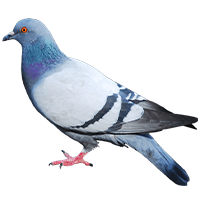

WALK MEMO
A simulation of the rhythm from surrounding sounds and movement expereinced during long walks. Walk Memo is a nostalgic ode to walks and noisy streets pre-quarantine.
Send notes on sounds you miss
here
.